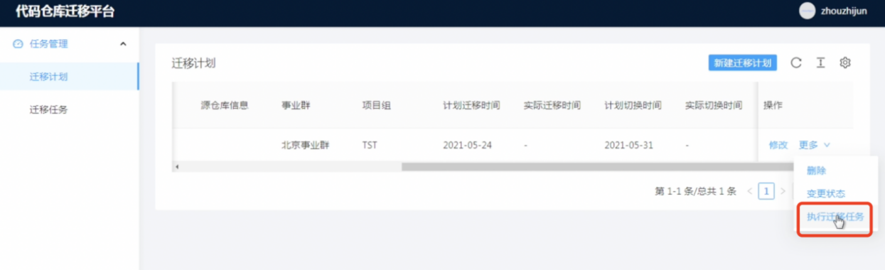
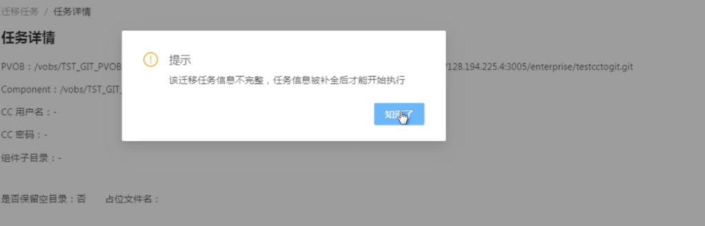
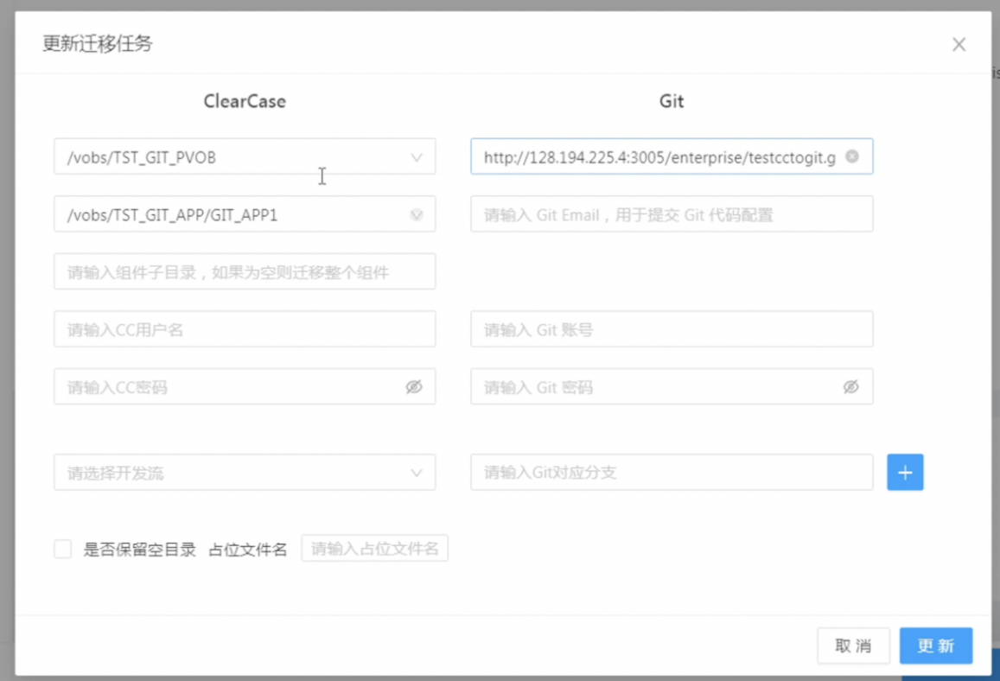
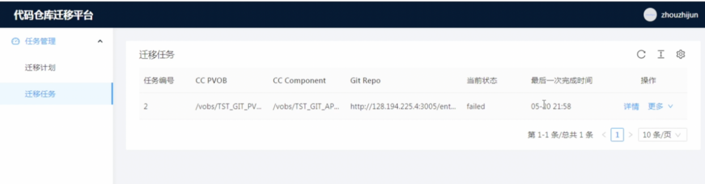
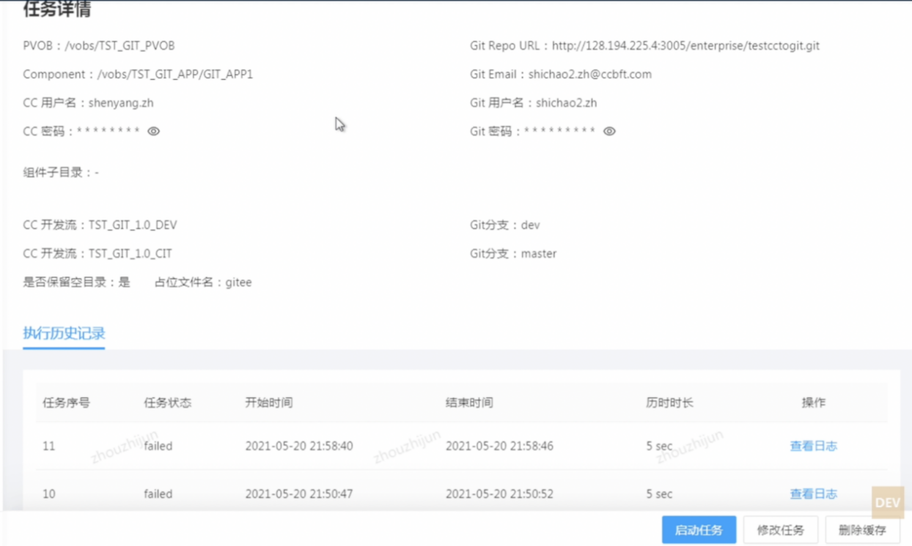
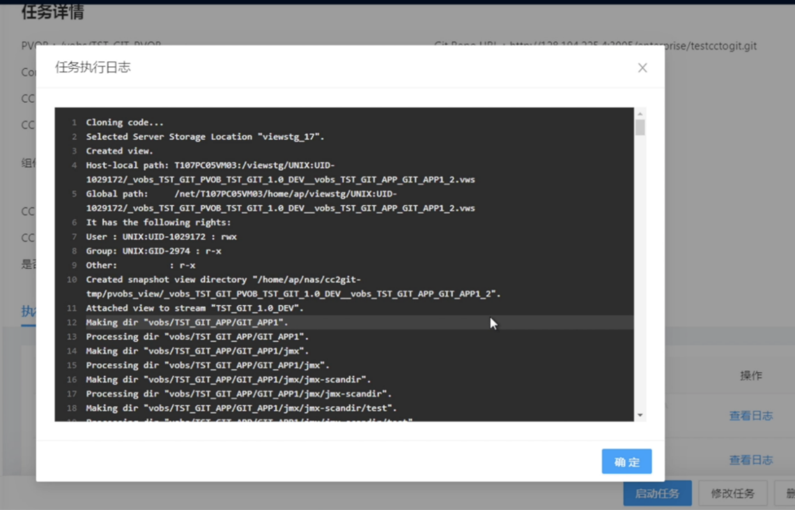

代码仓库迁移平台的地址是：http://128.194.255.15:8995。
通过该工具平台迁移的前提是迁移计划已经在该平台上完成了填写。
找到项目组的迁移计划，点击操作栏中的更多，然后点击“执行迁移任务”。执行迁移任务之前，需要在迁移计划中，新建或编辑的方式将目标仓库地址输入。

刚进来的时候可能会提示“迁移任务信息不完整，任务信息补全后才开始执行”。补全的信息主要是源仓库和目标仓库相关必要的用户密码等信息。


要补全的信息主要为CC的组件、用户名密码、开发流；目标仓库信息除了地址外需要输入目标Git地址的账号密码以及Git Email,以及Git对应的分支。
同时支持，迁移时是否保留空目录，占位文件名。确保空目录能够迁移到目标仓库。
点击“更新”，迁移任务即可立即执行。
然后点击菜单“迁移任务”，即可浏览该迁移任务的执行的详细情况和进度。在该界面中可以重复执行迁移任务，确保迁移工作完整完成。第一次迁移任务的执行，需要通过计划页面点击“执行迁移任务”创建，第二次以后重复执行，可在“迁移任务菜单”进行重复操作和修订。

点击“详情”链接，可以查看该任务的详细信息，在信息界面任务可以重复执行。通过“执行”按钮进行。每次执行迁移任务，都会形成一条执行历史记录。同时也支持修改任务和删除缓存的功能。

也可以通过“查看”日志的链接，查看迁移任务的执行日志，如果有错误可查看错误的原因。目前该截图的报错信息是权限报错导致。重新设置好权限后，点击“启动任务”可重新执行。
